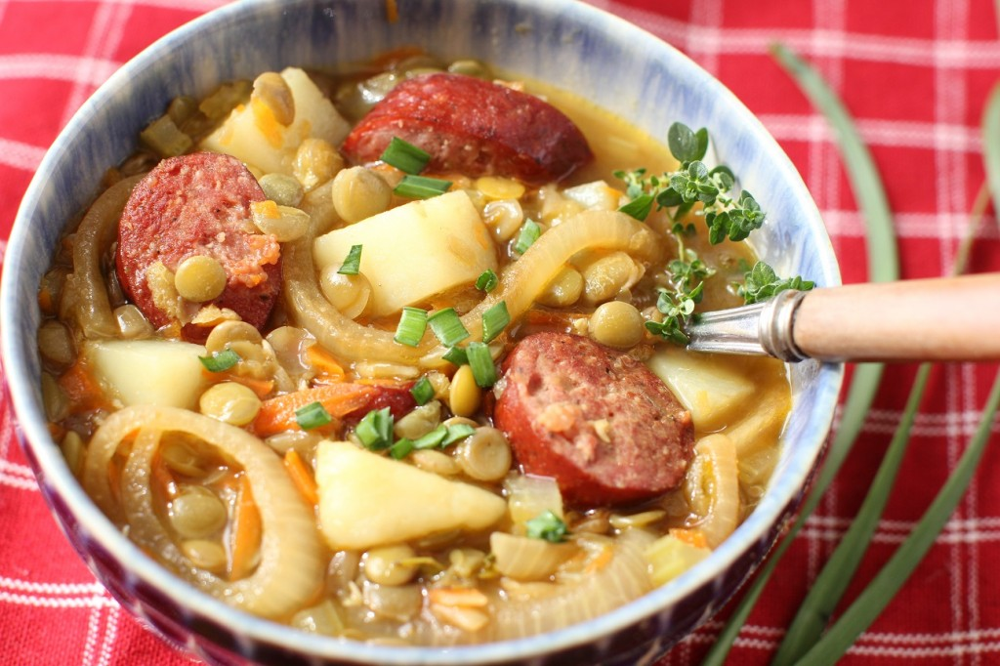

EINTOPF
Western Dish (Germany)

Takes 1 hour
Makes 12 servings
MAIN DISH
Ingredients
- 1 lb Polish sausage, partly skinned
- 1 lb carrot, scraped and sliced
- 10 potatoes, peeled and diced
- 1 (16 ounce) bag frozen French-cut green beans
- 2 onions, peel and slice
- 10 cups water (you can use all or part chicken broth as well)
- 1⁄4 teaspoon fines herbes, dried
- salt
- pepper
- maggi seasoning
Instruction
- 1. Put the first six ingredients into a pot and bring to a boil. Reduce heat and simmer for about 1 hour.
- 2. Add the herbs.
- 3. Adjust the seasoning with salt, pepper and Maggi seasoning.
- 4. Creativity is encouraged.
SOURCE : www.geniuskitchen.com
Add to Cart
want to try this recipe? order ingredients now!